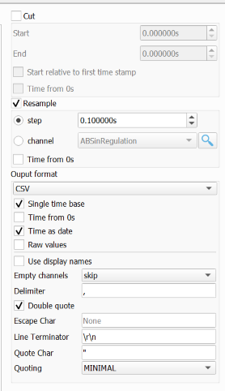

Aide fonctionnelle SEED
Retour à l'applicationGuide de l'outil de normalisation des mesures bancs, destiné aux exploitants d'essais familiers du traitement du signal.
L'application fonctionne dans le navigateur, sans serveur. Les fichiers sont traités en mémoire et aucune donnée ne quitte le poste. La lecture en flux permet de charger des enregistrements volumineux sans décoder tout le fichier simultanément.
1. Chargement d'un fichier de mesure
Dans la carte Fichier, un seul fichier de mesure est actif à la fois. En charger un nouveau réinitialise la session.
| Bouton | Format attendu | Encodage | Base de temps |
|---|---|---|---|
.M00x | Morphée, tabulation, 4 lignes d'entête | Sélectionnable | Timer de l'enregistrement libre et horodatage reconstruit depuis Date/Heure |
| BRBC3 | CSV virgule | UTF-8 | Colonne TEMPS (s), instant initial lu dans Time |
| Soufflerie | CSV point-virgule, 1 ligne d'entête, décimales avec virgule | Windows-1252 | Colonne 1 (s), date/heure dans les colonnes 3 et 2 de la première ligne de données |
.seed | TSV, 1 ligne d'entête | Windows-1252 | Colonne TEMPS (s) |
Entêtes et voies
Le format .M00x est positionnel : ligne 1 MNTPFILE, ligne 3 noms de voies, ligne 4 unités. Pour BRBC3, l'outil recherche la ligne commençant par TEMPS dans les 30 premières lignes et mémorise aussi les constantes d'entête.
Les colonnes entièrement non numériques sont écartées. Les champs vides, NaN et booléens deviennent des valeurs absentes : ils restent des discontinuités dans le tracé et ne sont pas interpolés silencieusement.
Les noms de voies connus sont normalisés selon la table de correspondances commune. La correspondance accepte les espaces ou les soulignés ; les voies non référencées gardent leur nom. Pour BRBC3, espaces et ~ deviennent des soulignés, et les constantes d'entête (inertie et coefficients F0/F1/F2) sont ajoutées comme voies constantes.
Base de temps et encodage
BRBC3, Soufflerie et SEED utilisent un pas estimé depuis les premières mesures, puis reconstruisent une base de temps uniforme. Cela supprime la gigue d'acquisition et fournit un pas constant. Pour .M00x, l'horodatage est reconstruit depuis le timer, ce qui préserve les ruptures éventuelles de cadence. Le sélecteur d'encodage ne concerne que les fichiers .M00x.
2. Correction : offset et mise à l'échelle
La section Correction est masquée pour les fichiers .seed, déjà normalisés. Une voie est éligible si son nom suit la convention TYPE_<désignation>_<coefficient>.
| Préfixe | Grandeur | Unité |
|---|---|---|
| I | Courant | A |
| U | Tension | V |
| T | Température | °C |
| P | Pression | bar |
| D | Déplacement | mm |
Le fichier d'offset doit provenir du même banc. Pour chaque voie éligible, l'offset est la moyenne des 60 dernières secondes du fichier, supposées correspondre à un palier stabilisé au repos.
valeur_corrigée = (valeur_brute - offset) × coefficient / 10 × signe
L'offset n'est pas soustrait aux voies de type T, car une température absolue n'a pas de zéro instrumental à compenser. La correction repart toujours des valeurs brutes et n'est jamais cumulative. Réinitialiser restaure les valeurs d'origine.
3. Fusion des calibres de pinces ampèremétriques
La fusion est disponible après la mise à l'échelle. Une famille regroupe les voies ayant la même racine I_<désignation> avec des calibres différents en suffixe.
Seules les voies dont l'écart-type dépasse 0,25 A sont retenues, ce qui écarte les pinces inactives ou bloquées à zéro. Les calibres sont triés par ordre croissant : la pince la plus sensible est conservée aux faibles amplitudes, puis les valeurs de la pince de calibre supérieur la remplacent au-delà de calibre_précédent - 10.
La voie résultante porte le suffixe (fusion des calibres).
4. Sources externes et synchronisation
La section de synchronisation apparaît lorsqu'un fichier de mesure est chargé.
| Bouton | Extension / séparateur | Entête | Temps |
|---|---|---|---|
| CSV CAN | .csv, virgule ou point-virgule détecté automatiquement | 1 ligne | Secondes ou horodatage pour l'offset ; alignement par index |
| CarScanner | .csv, virgule | 1 ligne | HH:mm:ss.SSS, passage de minuit géré |
| OBD Facile | .txt, point-virgule | 3 lignes, noms ligne 1 et unités ligne 3 | Secondes, notation française |
| Diagra | .csv, point-virgule | 3 lignes, noms ligne 2 et unités ligne 3 | Millisecondes |
Export CSV CAN depuis ASAM MDF
Dans l'outil ASAM MDF (asammdf), exporter le journal CAN avec les réglages ci-dessous. Utiliser les mêmes réglages pour le fichier de mesure et le fichier d'offset.
- Cut : décoché, pour exporter l'enregistrement complet.
- Resample : coché ; sélectionner pour un fichier à 10Hz ; step et régler le pas à
0.100000s(0,1 s, soit 10 Hz). Laisser Time from 0s décoché. - Output format :
CSV. - Single time base et Time as date : cochés. Laisser Time from 0s, Raw values et Use display names décochés.
- Empty channels :
skip; Delimiter : virgule (,). - Double quote : coché ; Escape Char :
None; Line Terminator :\r\n; Quote Char :"; Quoting :MINIMAL.
Le CSV attendu contient une seule ligne d'entête avec les noms de voies, puis les mesures, avec le temps en première colonne. Conserver les noms d'origine, notamment TYPE_<désignation>_<coefficient>, pour permettre la détection des voies éligibles et leur correspondance avec le fichier d'offset.

Rééchantillonnage
Le pas médian de la source est comparé à celui de la mesure. Si l'écart relatif dépasse 10⁻³, les voies sont rééchantillonnées par interpolation linéaire sur une grille au pas cible. En deçà, elles restent inchangées pour éviter un lissage inutile.
L'interpolation ne crée aucune valeur en dehors de la plage source ni à cheval sur un trou. Elle agit comme un filtre passe-bas implicite : une source sous-échantillonnée, par exemple CAN à 1 Hz face à un banc à 10 Hz, ne restitue pas la dynamique manquante.
Mise à l'échelle et alignement
valeur_CAN = (valeur_brute - offset) × coefficient / 10
Pour le CAN, le bouton unique Appliquer offset et échelle CAN demande un CSV d'offset du même format, puis calcule automatiquement la moyenne des 60 dernières secondes de chaque voie correspondante et la soustrait avant la mise à l'échelle. Les températures (T) ne sont pas corrigées en offset. Les voies sans correspondance utilisent un offset nul et sont signalées dans le compte rendu.
Pour les autres sources, le bouton Mettre à l'échelle applique seulement valeur_brute × coefficient / 10. Le bouton est désactivé si aucune voie n'est éligible et après application, pour éviter un double facteur. Les voies déjà synchronisées sont également mises à jour.
Pour Synchroniser, choisir une voie dans chaque source et un seuil. L'outil repère le premier franchissement croissant du seuil (v[i-1] < seuil et v[i] ≥ seuil), puis aligne les deux indices. Seule la plage commune est conservée et les voies externes sont ajoutées au jeu de mesures.
Choisir un front net, par exemple le démarrage du véhicule sur une voie de vitesse. Un seuil trop bas peut déclencher sur le bruit de zéro. La synchronisation est réversible : une nouvelle synchronisation repart des données non tronquées.
5. Opérations sur les voies
| Action | Effet |
|---|---|
| Inverser le signe | Multiplie par -1 les voies sélectionnées ; le signe est conservé lors d'une correction. |
| Renommer la voie | Modifie le nom affiché et exporté. Une seule voie à la fois. |
| Supprimer la voie | Retire la voie du jeu de données. |
| Calculer la moyenne (_moy) | Calcule la moyenne échantillon par échantillon. |
| Calculer la somme (_sum) | Calcule la somme échantillon par échantillon. |
| Correction unitaire | Sur une seule voie sélectionnée, ouvre la saisie d'un offset et d'un gain, puis crée une voie supplémentaire suffixée _mod selon (valeur - offset) × gain. Les valeurs absentes restent absentes et la voie d'origine n'est pas modifiée. Les valeurs par défaut sont offset 0 et gain 1 ; relancer l'outil sur la même voie met à jour sa voie _mod. |
| Créer PHASE_ESSAI | Disponible après chargement d'un fichier Soufflerie. Utilise uniquement VITESSE_CYCLE, qui doit être présente. Le retour de consigne à zéro démarre une phase supplémentaire ; la reprise de la consigne démarre la suivante. La détection reprend les règles SEED de fusion des phases courtes et de numérotation. |
Les calculs ignorent les valeurs absentes : la moyenne porte sur les seules voies valides à chaque instant et vaut « absent » si aucune voie ne l'est. L'unité n'est propagée que si toutes les voies sources partagent la même. Relancer un calcul avec les mêmes sources met à jour la voie existante.
Pour PHASE_ESSAI, les consignes VITESSE_CYCLE dont la valeur absolue est inférieure ou égale à 0,05 km/h sont neutralisées avant la détection des transitions. Cela évite que le bruit autour de zéro crée de nouvelles phases. Le retour à zéro reçoit un numéro de phase et la reprise de consigne le numéro suivant. Une phase de moins de 200 × fréquence d'échantillonnage est fusionnée avec la suivante si celle-ci contient une consigne nulle. Les phases actives sont numérotées, avec incrément du numéro après les phases d'au moins 500 échantillons.
6. Visualisation
Jusqu'à 16 voies peuvent être affichées simultanément. Le tracé utilise scattergl, adapté aux enregistrements de grande taille.
- Deux unités différentes créent automatiquement un second axe Y à droite.
- L'axe X affiche la date et l'heure ; le survol unifié facilite la comparaison au même instant.
- Les valeurs absentes restent visibles comme des discontinuités.
7. Sélection d'une plage temporelle
- Le curseur sous l'axe X permet de sélectionner une plage et d'en prévisualiser la courbe.
- Les champs Début (s) et Fin (s) règlent précisément les bornes ; ils suivent le zoom et le curseur.
- Plage complète restaure toute l'étendue.
- Le compteur indique le nombre d'échantillons sélectionnés.
Les bornes sont converties en indices selon le pas de temps, réordonnées si elles sont inversées et limitées à l'étendue disponible.
8. Export .seed
| Bouton | Étendue |
|---|---|
| Exporter SEED | Enregistrement complet |
| Exporter la plage affichée | Plage sélectionnée, avec suffixe _<début>s-<fin>s |
Le fichier produit est un TSV Windows-1252, avec TEMPS en première colonne. Le temps repart de zéro au début de la plage et avance selon le pas de temps. Les noms de voies sont normalisés, les espaces remplacés par des soulignés et les valeurs arrondies à 5 décimales, sans zéros finaux inutiles.
Une valeur absente est exportée comme champ vide, jamais comme zéro. Les fichiers exportés peuvent être relus avec le bouton .seed pour reprendre une session sans refaire les corrections.
9. Remise à zéro
Le bouton corbeille, dans la ligne de chargement, vide les mesures, sources externes, offsets, sélections, graphique, bornes de plage et champs de fichier. Une confirmation est demandée si des mesures sont chargées.